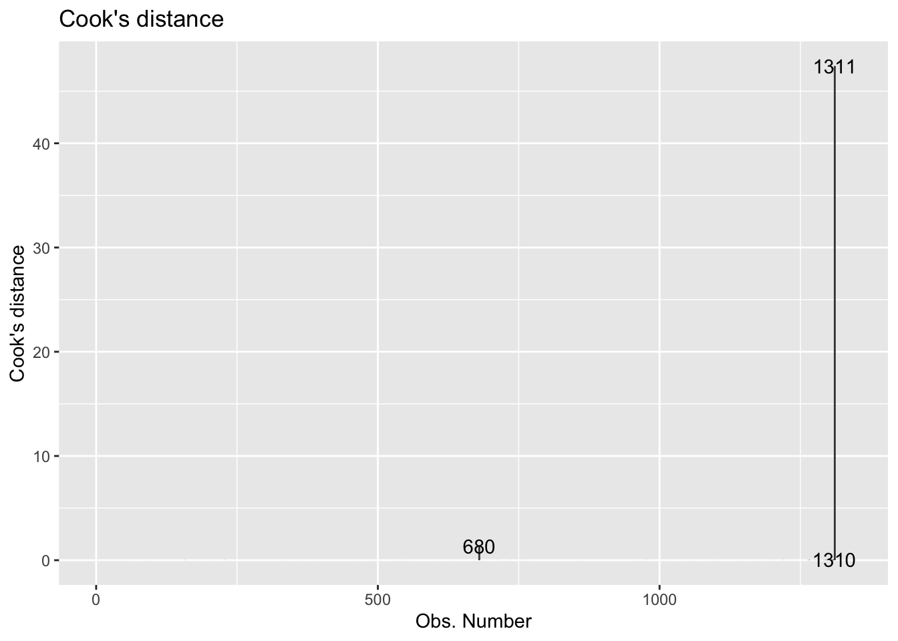

library(tidyverse)
library(tidymodels)
library(knitr)
library(ggfortify)Lab 3 - Coffee ratings
Introduction
In today’s lab you will analyze data from over 1,000 different coffees to explore the relationship between a coffee’s aroma and it’s overall quality. You will also begin working with your team and practicing a collaborative data analysis workflow.
Learning goals
By the end of the lab you will…
- Create plots and calculate associated statistics to assess model diagnostics.
- Practice collaborating with others using a single Github repo.
Meet your team!
Click here to see the team assignments for STA 210. This will be your team for labs and the final project.
Before you get started on the lab, your TA will walk you through the following:
- Icebreaker activity to get to know your teammates.
- Come up with a team name. You can’t use the same name as another team, so I encourage you to be creative! Your TA will get your team name by the end of lab.
- Fill out the team agreement. This will help you figure out a plan for communication and working together during labs and outside of lab times. You can find the team agreement in the GitHub repo team-agreement-[github_team_name].
- Have one person from the team clone the repo and start a new RStudio project. This person will type the team’s responses as you discuss the sections of the agreement. No one else in the team should type at this point but should be contributing to the discussion.
- Be sure to push the completed agreement to GitHub. Each team member can refer to the document in this repo or download the PDF of the agreement for future reference. You do not need to submit the agreement on Gradescope.
Getting started
- A repository has already been created for you and your teammates. Everyone in your team has access to the same repo.
- Go to the sta210-s22 organization on GitHub. Click on the repo with the prefix lab-3. It contains the starter documents you need to complete the lab.
- Each person on the team should clone the repository and open a new project in RStudio. Do not make any changes to the
.qmdfile until the instructions tell you do to so.
Workflow: Using Git and GitHub as a team
Important
Assign each person on your team a number 1 through 4. For teams of three, Team Member 1 can take on the role of Team Member 4.
The following exercises must be done in order. Only one person should type in the .qmd file, commit, and push updates at a time. When it is not your turn to type, you should still share ideas and contribute to the team’s discussion.
⌨️ Team Member 1: Hands on the keyboard.
🙅🏽 All other team members: Hands off the keyboard until otherwise instructed!1
Change the author to your team name and include each team member’s name in the author field of the YAML in the following format: Team Name: Member 1, Member 2, Member 3, Member 4.
Team Member 1: Render the document and confirm that the changes are visible in the PDF. Then, commit (with an informative commit message) both the .qmd and PDF documents, and finally push the changes to GitHub.
Team Members 2, 3, 4: Once Team Member 1 is done rendering, committing, and pushing, confirm that the changes are visible on GitHub in your team’s lab repo. Then, in RStudio, click the Pull button in the Git pane to get the updated document. You should see the updated name in your .qmd file.
Packages
The following packages are used in the lab.
Data: Coffee ratings
The dataset for this lab comes from the Coffee Quality Database and was obtained from the #TidyTuesday GitHub repo. It includes information about the origin, producer, measures of various characteristics, and the quality measure for over 1000 coffees.
This lab will focus on the following variables:
aroma: Aroma grade, 0 - 10 scaletotal_cup_points: Measure of quality, 0 - 100 scale
You can find the definitions for all variables in the data set here. Click here for more details about how these measures are obtained.
coffee_ratings <- read_csv("data/coffee_ratings.csv")Exercises
Note
- Include axis labels and an informative title for all plots.
- Use the
kablefunction to neatly print tables and regression output. Write all interpretations in the context of the data. - Do the following exercises in order, following each step carefully.
- Only one person at a time should type in the
.qmdfile and push updates. - If you are working on any portion of the lab virtually, the person working should share their screen and the others should follow along.
⌨️ Team Member 1: Hands still on the keyboard. Write the answers to Exercises 1 and 2.
🙅🏽 All other team members: Hands off the keyboard until otherwise instructed!
Exercise 1
Visualize the relationship between aroma and the total cup points. What do you observe from the plot? Use the plot the describe the relationship between the two variables.
Exercise 2
Fit the linear model and neatly display the results using 3 digits. Interpret the slope in context of the data.
Team Member 1: Render the document and confirm that the changes are visible in the PDF. Then, commit (with an informative commit message) both the .qmd and PDF documents, and finally push the changes to GitHub. Make sure to commit and push all changed files so that your Git pane is empty afterwards.
Team Members 2, 3, 4: Once Team Member 1 is done rendering, committing, and pushing, confirm that the changes are visible on GitHub in your team’s lab repo. Then, in RStudio, click the Pull button in the Git pane to get the updated document. You should see the responses to Exercises 1 and 2 in your .qmd file.
Now it’s time for a hand off…
⌨️ Team Member 2: Hands on the keyboard. Write the answers to Exercises 3 and 4.
🙅🏽 All other team members: Hands off the keyboard until otherwise instructed!
Exercise 3
Would the members of your group drink a coffee represented by the intercept? Why or why not? Discuss as a group and write the group’s consensus.
Exercise 4
Leverage is the measure of the distance between an observation’s values of the predictor variables and the average values of the predictor variables for the entire data set. An observation s set if have high leverage if its combination of values for the predictor variables is very far from the typical combination of values in the data.An observation has high leverage if its combination of values for the predictor variables is very far from the typical combination of values in the data. Observations with high leverage should be considered as potential influential points.
We will proceed assuming the model conditions hold, so let’s focus on the model diagnostics. We’ll start by examining if there are any points with high leverage in the data.
Theoretically, the leverage of the \(i^{th}\) observation as follows:
\[ h_i = \frac{1}{n} + \frac{(x_i - \bar{x})^2}{\sum_{j = 1}^n (x_j - \bar{x})^2} \]
Note that leverage only depends on values of the predictor variable(s).
The sum of the leverages for all points is \(p + 1\), where
- \(p\) is the number of predictors
- In the case of SLR, \(\sum_{i = 1}^n h_i = 2\)
- The “typical” leverage is \(\frac{(p + 1)}{n}\)
Therefore, an observation is said to have high leverage if
\[ h_i > \frac{2(p + 1)}{n} \]
In addition to comparing the leverage of points to a threshold, we also generally visualize standard residuals vs. leverage values our data. The autoplot() function from the ggfortify package is very useful for drawing these standard plots easily.
autoplot(coffee_fit$fit, which = 5)- What threshold will you use to determine if there are points with high leverage for this dataset?
- Are there any observations with high leverage? If so, how many? Briefly explain, including any output, graphs, etc. you used to determine the response. Improve your plot by adding a new year to draw a vertical line (with
geom_vline()) at the value of the threshold you’re using to determine which points have high leverage.
Team Member 2: Render the document and confirm that the changes are visible in the PDF. Then, commit (with an informative commit message) both the .qmd and PDF documents, and finally push the changes to GitHub. Make sure to commit and push all changed files so that your Git pane is empty afterwards.
Team Members 1, 3, 4: Once Team Member 2 is done rendering, committing, and pushing, confirm that the changes are visible on GitHub in your team’s lab repo. Then, in RStudio, click the Pull button in the Git pane to get the updated document. You should see the responses to Exercises 3 and 4 in your .qmd file.
Now it’s time for another hand off…
⌨️ Team Member 3: Hands on the keyboard. Write the answers to Exercises 5.
🙅🏽 All other team members: Hands off the keyboard until otherwise instructed!
Exercise 5
Another standard model diagnostic involves identifying points that don’t fit the pattern from the regression line. We do this by determining which points have large standardized residuals (residual divided by the standard error of residuals).
\[ Std.~res_i = \frac{y_i - \hat{y}_1}{\hat{\sigma}_\epsilon ~ \sqrt{1 - h_i}}, \]
where \(\hat{\sigma}_\epsilon\) is the regression standard error.
Note
These values are already calculated in the output of augment().
Observations that have standardized residuals of large magnitude (usually beyond \(\pm\) 3) are potential outliers, since they don’t fit the pattern determined by the regression model. Therefore, a common practice is to plot standardized residuals vs. fitted values, to make it easier to identify outliers.
We can obtain this plot with the following:
autoplot(coffee_fit$fit, which = 3)Create this visualization and horizontal lines (with geom_hline()) at the cutoff values for “large” standardized residuals (\(\pm\) 3). Are there any such points in the data? If so, how many? Briefly explain, including any output, graphs, etc. you used to determine the response.
Team Member 3: Render the document and confirm that the changes are visible in the PDF. Then, commit (with an informative commit message) both the .qmd and PDF documents, and finally push the changes to GitHub. Make sure to commit and push all changed files so that your Git pane is empty afterwards.
Team Members 1, 2, 4: Once Team Member 3 is done rendering, committing, and pushing, confirm that the changes are visible on GitHub in your team’s lab repo. Then, in RStudio, click the Pull button in the Git pane to get the updated document. You should see the responses to Exercise 5 and 4 in your .qmd file.
Now it’s time for another hand off…
⌨️ Team Member 4: Hands on the keyboard. Write the answers to Exercises 6.
🙅🏽 All other team members: Hands off the keyboard until otherwise instructed!
Exercise 6
Finally, we’ll examine Cook’s Distance. An observation’s influence on the regression line depends on how close it lies to the general trend of the data (i.e., its standardized residual) and it’s leverage (\(h_i\)). Cook’s Distance is a statistic that includes both of these components to measure an observation’s overall impact on the model. Cook’s Distance for the \(i^{th}\) observation is defined as the follows:
\[
D_i = \frac{(std.~res)^2}{p + 1} (\frac{h_i}{1-\frac{h_i})
\]
An observation with large \(D_i\) is said to have a strong influence on the predicted values. On that scale,
- \(D_i\) > 0.5 is moderately influential
- \(D_i\) > 1 is very influential
We can plot of Cook’s distances vs. the observation number with the following:
autoplot(coffee_fit$fit, which = 4, ncol = 1)
Standardized residuals, leverage, and Cook’s Distance should all be examined together. So what do we do with observations identified as outliers or leverage points?
It is OK to drop an observation based on the predictor variables if…
It is meaningful to drop the observation given the context of the problem
You intended to build a model on a smaller range of the predictor variables. You should mention this in the write up of the results and be careful to avoid extrapolation when making predictions.
It is not OK to drop an observation based on the response variable if…
- These are legitimate observations and should be in the model.
- You can try transformations or increasing the sample size by collecting more data.
So lastly, let’s analyze Cook’s D to determine if there are influential points in the data.
- Based on Cook’s D, are there any influential points in our data? Briefly explain, including any output, graphs, etc. you used to determine the response.
- If there are influential points, briefly explain why they are outliers, i.e., not in the trend of the rest of the data.
- If there are influential points, remove those points from the data and refit the model. How do the model coefficients change, if at all?
- If there are influential points, would you recommend using the model fit with or without these points for inferential conclusions and predictions? Briefly explain why or why not. Additionally, briefly explain potential impacts your choice has on inferential conclusions and/or predictions.
Team Member 4: Render the document and confirm that the changes are visible in the PDF. Then, commit (with an informative commit message) both the .qmd and PDF documents, and finally push the changes to GitHub. Make sure to commit and push all changed files so that your Git pane is empty afterwards.
Team Members 1, 2, 3: Once Team Member 4 is done rendering, committing, and pushing, confirm that the changes are visible on GitHub in your team’s lab repo. Then, in RStudio, click the Pull button in the Git pane to get the updated document. You should see the responses to Exercise 6 and 4 in your .qmd file.
Now it’s time for one last hand off…
Wrapping up
Important
⌨️ Team Member 2: Hands on the keyboard. Make any edits as needed.
🙅🏽 All other team members: Hands off the keyboard until otherwise instructed!
Team Member 2: Render the document and confirm that the changes are visible in the PDF. Then, commit (with an informative commit message) both the .qmd and PDF documents, and finally push the changes to GitHub. Make sure to commit and push all changed files so that your Git pane is empty afterwards.
Team Members 1, 3, 4: Once Team Member 2 is done rendering, committing, and pushing, confirm that the changes are visible on GitHub in your team’s lab repo. Then, in RStudio, click the Pull button in the Git pane to get the updated document. You should see the final version of your .qmd file.
Submission
Warning
Before you wrap up the assignment, make sure all documents are updated on your GitHub repo. We will be checking these to make sure you have been practicing how to commit and push changes.
Remember – you must turn in a PDF file to the Gradescope page before the submission deadline for full credit.
To submit your assignment:
- Select one team member to upload the team’s PDF submission to Gradescope.
- Be sure to include every team member’s name in the Gradescope submission.
- Go to http://www.gradescope.com and click Log in in the top right corner.
- Click School Credentials ➡️ Duke NetID and log in using your NetID credentials.
- Click on your STA 210 course.
- Click on the assignment, and you’ll be prompted to submit it.
- Mark the pages associated with each exercise. All of the pages of your lab should be associated with at least one question (i.e., should be “checked”). If any answer spans multiple pages, then mark all pages.
- Select the first page of your PDF submission to be associated with the “Workflow & formatting” section.
Important
There should only be one submission per team on Gradescope.
Grading
Total points available: 50 points.
| Component | Points |
|---|---|
| Ex 1 - 6 | 42 |
| Workflow & formatting | 52 |
| Complete team contract | 3 |
Footnotes
Don’t trust yourself to keep your hands off the keyboard? Put them in your picket or cross your arms. No matter how silly it might feel, resist the urge to touch your keyboard until otherwise instructed!↩︎
The “Workflow & formatting” grade is to assess the reproducible workflow. This includes having at least 3 informative commit messages and updating the name and date in the YAML.↩︎